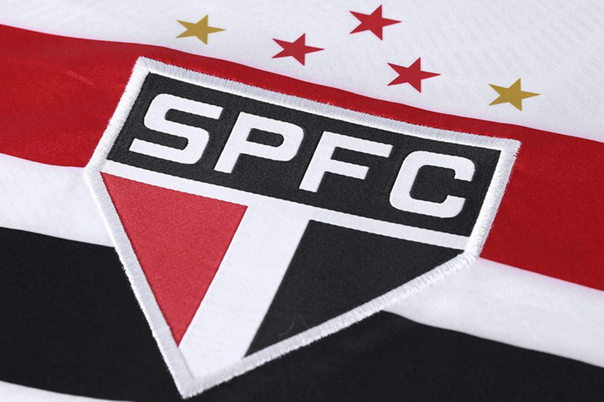

São Paulo FC
O São Paulo Futebol Clube foi criado a partir da fusão entre o Clube Atlético Paulistano e a Associação Atlética das Palmeiras, em 1930. O início da história do São Paulo Futebol Clube (SPFC ) se deu em função da história do Clube Atlético Paulistano.